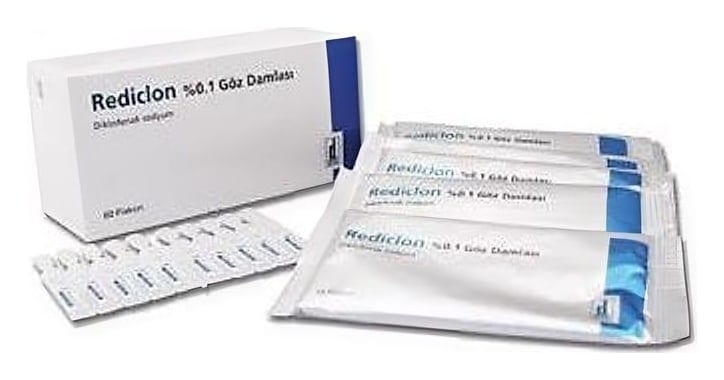

Rediclon %0.1 Göz Damlası, Çözelti, 60 Flakon

Ne için kullanılır
KT · Bölüm 1REDİCLON göz damlası, berrak, renksiz, göz ile görünür partikül içermeyen çözeltidir ve tek kullanımlık flakon içeren saşeler ile birlikte bir kutu içersinde 20 adet flakon ve 60 adet flakon içeren kutular halinde sunulmaktadır.
REDİCLON etkin madde olarak her bir flakonda 0,3 mg diklofenak sodyum içerir. REDİCLON non-steroidal antiinflamatuar (NSAİ) ilaçlar olarak adlandırılan bir ilaç grubuna dahildir.
REDİCLON, göz ameliyatlarının öncesinde göz bebeğinin açık kalmasını sağlamak amacıyla, göz ameliyatlarının öncesinde ve sonrasında oluşabilecek kistoid makula ödeminin (retinanın altında sıvı ve protein birikmesiyle meydana gelen bir göz hastalığı) engellenmesi ve göz ameliyatlarının veya yaralanmalarının sonrasında ağrı ve/veya inflamasyonu kontrol altına almak amacıyla kullanılır. Ayrıca gözdeki ağrının ve ışığa hassasiyetin giderilmesinde kullanılır.